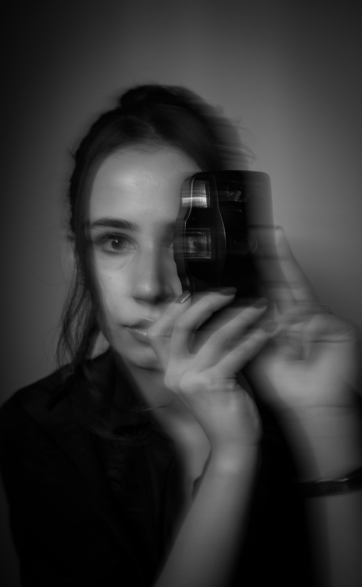
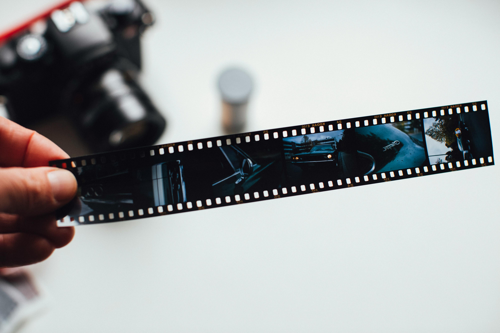
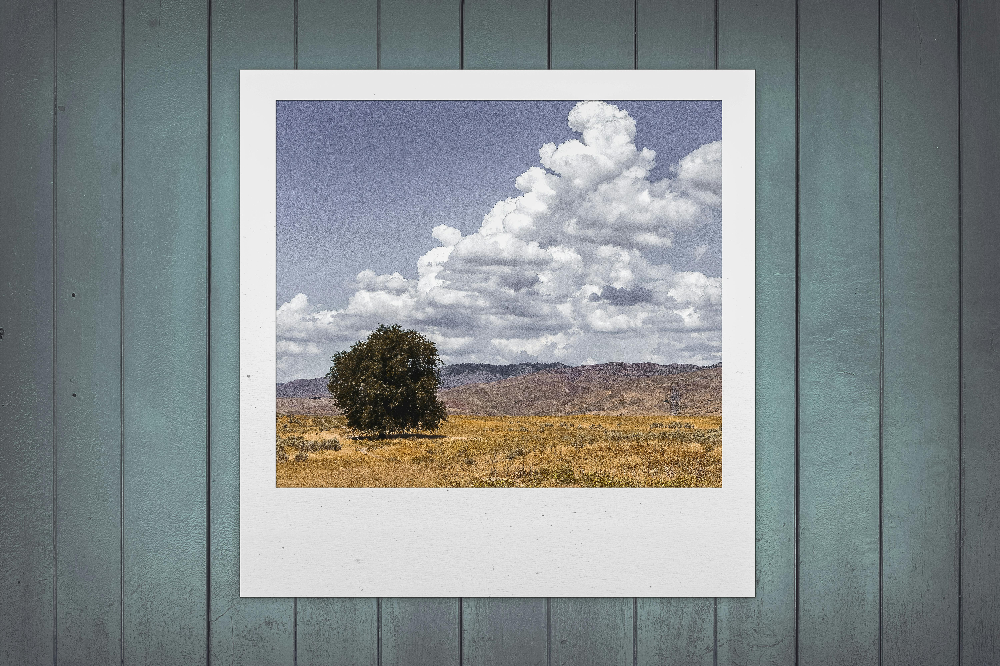
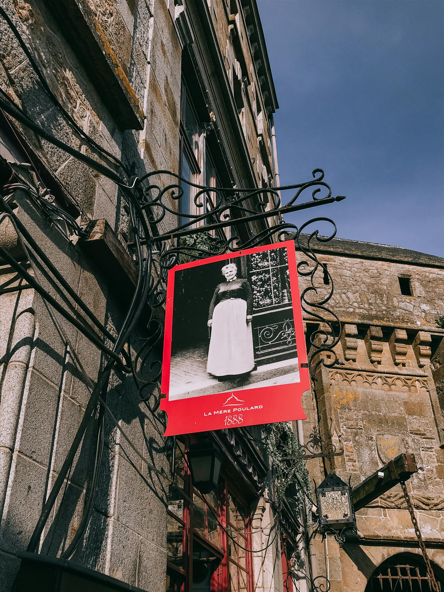

Qué son y cuántos existen
Los géneros fotográficos son categorías o divisiones que aúnan obras fotográficas
teniendo en cuenta diferentes factores que pueden ser la temática, la técnica, el sujeto, etc.
A pesar de que podríamos encontrar decenas de géneros fotográficos.
A pesar de inmortalizar momentos en imágenes, el mundo de la fotografía no es estático.
Evoluciona y cambia como lo hace el sector de la tecnología y la misma sociedad. Por ello,
los géneros fotográficos son también cambiantes.
Diferentes géneros fotográficos
Como comentábamos anteriormente, la lista de géneros fotográficos no es inmóvil en el tiempo. Debemos comprender que el campo de la fotografía es cambiante y experimenta cambios, novedades y técnicas.
| Retrato | Reportaje | Naturaleza Muerta | Paisaje | Nocturna | Publicitaria |
|---|---|---|---|---|---|
|  |  |  |
 |  |
 |
| Deriva directamente de la pintura y es la representación del cuerpo y cara humano. | Ilustrar situaciones o realidades puntuales con diferentes objetivos como informar o estudiar algún suceso. | Es el que retrata bodegones, u objetos inanimados preparados y dispuestos especialmente para la foto. | Es la captura de espacios naturales, urbanos, rurales o elementos que conforman estos espacios. | nocturna es una especialidad que requiere de técnica y equipo tecnológico. | Es especialmente enfocado al mundo de la publicidad, con otros profesionales como el diseñador, el publicista o modelos. |